Algorithm
Aversion
인공지능이 0.1초 만에 반사적으로 뱉어낸 문장은 물 흐르듯 매끄럽지만,
신빙성이 결여되어 있고 완벽한 비트와 멜로디는 오히려 불쾌감을 준다.
우리는 왜 가짜가 사람을 완벽히 흉내낼 때 안도감이 아닌 공포와 피로를 느낄까?
디지털 오물이 쏟아지는 세상 속에서 우리가 잃어버린 창작의 진정성을 추적해본다.
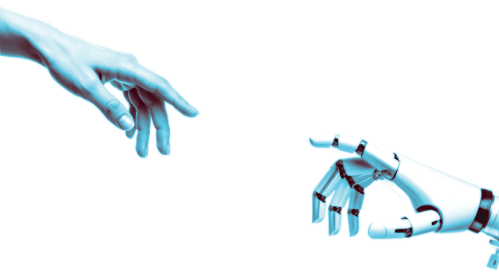
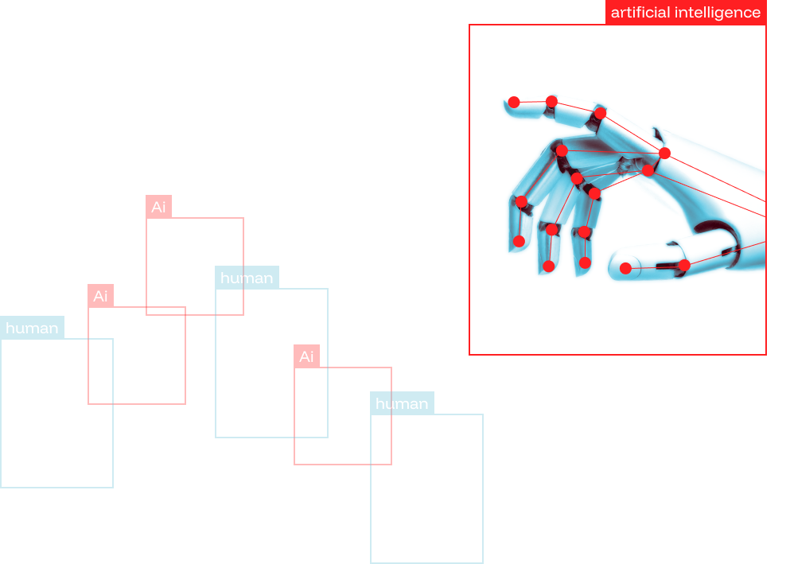
Algorithm Aversion?
알고리즘 거부감?
알고리즘 거부감(Algorithm aversion)이란,
인간 에이전트와 비교하여 알고리즘에 대한 부정적인 행동과
태도로 나타나는 알고리즘에 대한 편향된 평가로 정의된다.
이 현상은 인간이 같은 조언을 인간으로부터 받았다면 받아들였을
상황에서도 알고리즘의 조언이나 권고를 거부하는 경향을 설명한다.
알고리즘 거부감과 관련되어 사용되는 단어들을 알아보자.
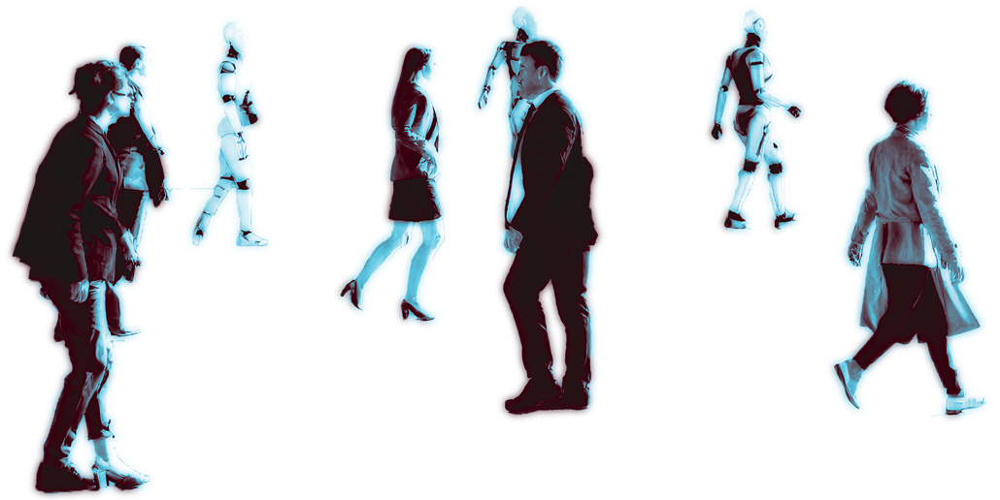
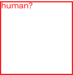
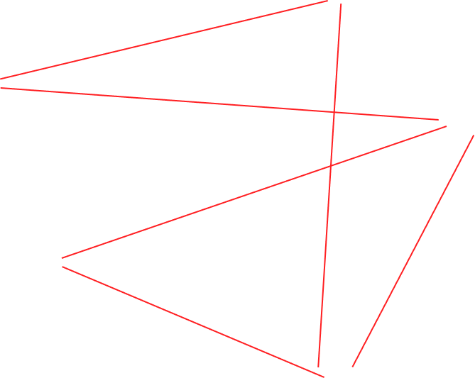
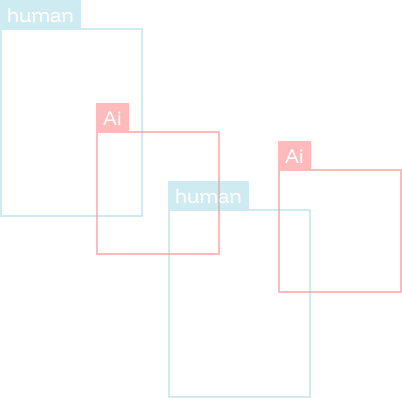
최근 영미권에서는 AI가 만든 저질 콘텐츠를 오물이나 쓰레기 음식을 뜻하는 Slop이라고 부르며 강력한 거부감을 드러내고 있다
Why do people feel
Algorithm Aversion
왜 사람들은 알고리즘에
거부감을 느낄까?
인간은 직관적으로 이해할 수 있는 시스템을 신뢰하지만, AI는 블랙박스처럼 작동하기 때문에 의사결정 과정이 보이지 않는다는 점이 거부감을 키운다. 사람들은 AI가 실수를 저지를 때 인간보다 더 크게 반발하는 경향을 보인다.
이는 AI가 객관적이고 데이터 기반이라고 믿기 때문이며, 기대가 어긋날 때 불쾌감이 커지는 '기대 위반' 현상과 관련이 있다. 사람들은 AI가 논리적이고 공정하다고 믿기 때문에 이미지 인식 오류, 편향된 출력, 부적절한 추천이 발생하면 AI에 강한 반감을 갖게 된다.
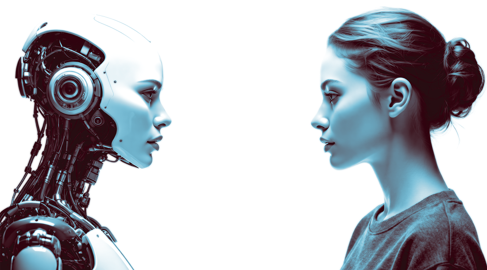
Real-world Examples of
Algorithm Aversion
실제 세계의 알고리즘 거부감
알고리즘이 우리의 일상적 선택을 지배하고 있지만
그것에 대한 우리의 신뢰는 여전히 낮다. 알고리즘 거부감은
추상적인 개념이 아니라 우리의 기술 경험을 형성하는 실제적인
반응이다. 이것이 현실에서는 어떤 모습으로 나타날까?
알고리즘 거부감의 흔한 예시들을 소개한다.
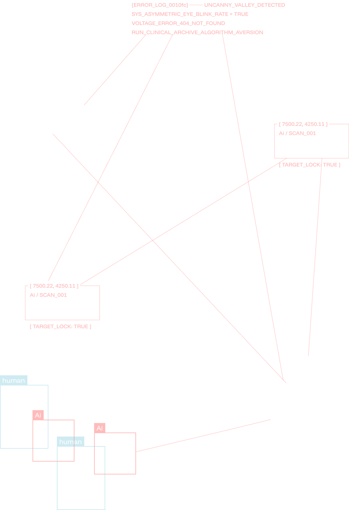
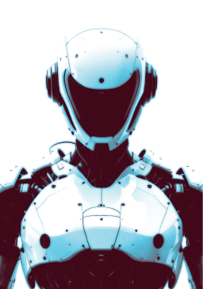
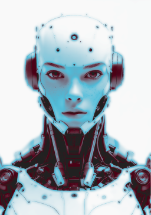
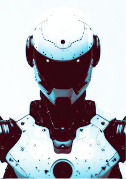
Why We Still
Need Humans
우리는 왜 인간을
필요로 하는가
기술은 데이터의 무결함을 추구하며 완벽한 정답을 설계하지만, 사람의 마음을 움직이는 예술은 역설적으로 인간의 결핍과 불완전함에서 탄생한다. 신빙성은 단순히 정보의 정확도에서 오는 것이 아니라, 창작자가 지나온 삶의 맥락과 서사 속에서 비로소 완성되기 때문이다.
이미 AI는 우리 삶의 거대한 비중을 차지하고 있으며, 우리는 이를 완전히 끊어낼 수 없다. 하지만 기술이 닿지 못하는 인간만의 온도와 서툰 진심을 기억해야 한다. 완벽한 AI보다 불완전한 인간의 온기가 더 큰 울림을 주는 이유, 그것이 우리가 여전히 진짜를 갈구하는 본질적인 이유이다.